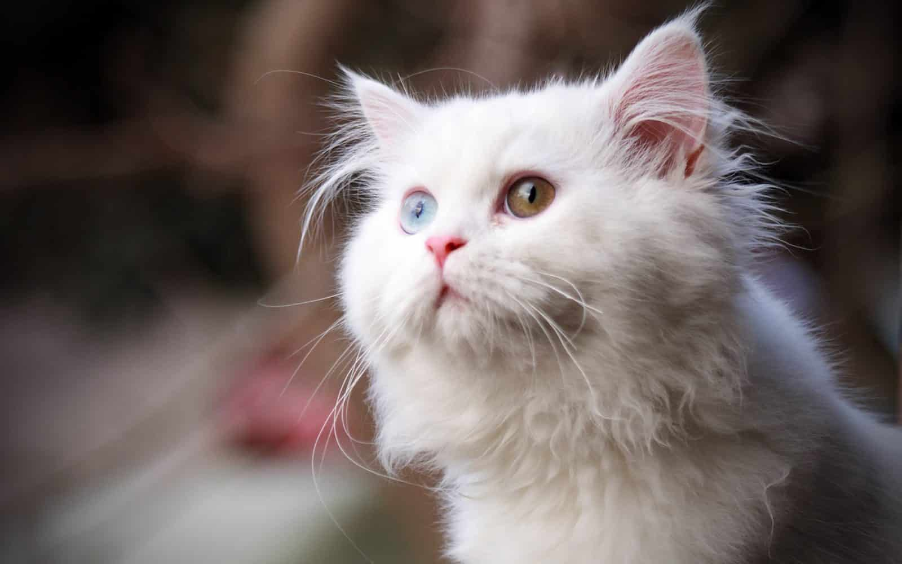

قطط مفقودة

الاسم: لولي
العمر: 4 سنوات
ضاع منذ أسبوع
منطقة المدينة تحديداً في العزيزية
الاسم: سام
العمر: سنة
ضاع منذ أسبوعين
منطقة الشرقية تحديداً الخبر

الاسم: لوسي
العمر: 8 شهور
ضاع منذ 5 أيام
منطقة الرياض تحديداً
الاسم: كيتي
العمر: 3 شهور
ضاع منذ أسبوع
منطقة المدينة تحديداً حي العزيزية